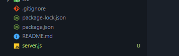
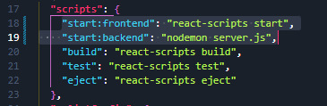

Install Backend Dependencies and Start the Servers
Create Our Backend File
Inside the main project folder, create a file called 'server.js'. This will be our backend
So create this server.js file...
Install the Dependencies
We need to install cors, express, and nodemon.
Run this command in the project terminal...
npm i cors express nodemon
To avoid version clashes, it's pretty important that you install the same version as I have for this project, incase you are following this in the future.
These are the verions I have installed now...
npm i cors@2.8.5 express@4.18.2 nodemon@2.0.22
You should also note that I am using v18.2.0 of react and react-dom, and v5.0.1 of react-scripts.
If you don't know what is cors, here is an excellent written explanation of cors, and cors errors.
If you prefer a more visual explanation, here are a couple of videos. This one is by fireship, and This one is by WedDevSimplified
As for nodemon, you will see what it does shortly. If you want to know more about it just google 'nodemon'.
Write a Script to Start Our Backend
In the package.json file, change the name of the existing start script, and then create another script that runs the nodemon package we just installed.
Your scripts should look like this...
Whats happening is we are using nodemon to constantly listen for changes on our backend. So we say nodemon, and we listen up changes for server.js
Start the Frontend Server
Open the project terminal, and if you already have a localhost running, press CTRL+C to stop it.
Once you have no localhost running, use this command...
npm run start:frontend
Start the Backend Server
Now keep that terminal window open, but open another one for the project, so that we can run more commands.
We need to run the backend, so run this command in the new terminal...
npm run start:backend